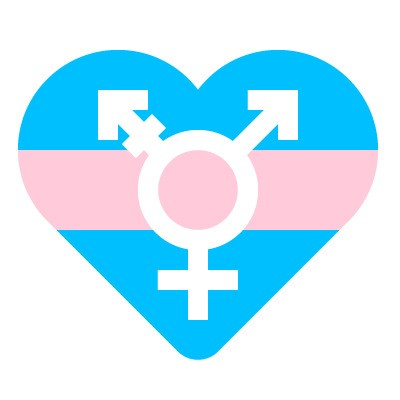

[转][招募][跨儿心理]跨儿心理小组秋季招募！就是你了！
以下文章来源于跨儿心理 ，作者跨儿心理

跨儿心理
.
跨儿心理小组，是一个专注于跨儿（跨性别者与非性别常规者）心理健康的公益团队。小组致力于通过社群服务、社群培力、调查研究、公众教育与社会倡导等工作，改善跨儿的福祉，促进社会的性别多元平等。

写在前面的话
时光荏苒，距离春季招新过去了半年。这半年里，看着不断壮大的小组，每个志愿者各施其职，把各自负责的工作做得很好，心里总会泛起一股暖意。原来有这么多人愿意为跨儿社群能有更好的生存环境努力，当大家坚定地走到一起时，那股力量仿佛可以与这个还不算太好的世界相抗衡。
这一次，跨儿心理小组又再次召唤可以和我们并肩走的伙伴。欢迎加入我们的大家庭。

关于跨儿心理小组
跨儿心理小组2018年3月成立于广州，是一个专注于跨儿（跨性别者与非性别常规者）心理健康的公益团队。致力于通过社群服务、社群培力、调查研究、公众教育与社会倡导等工作，改善跨儿的福祉，促进社会的性别多元平等。


-ABOUT US-
PSYCHOLOGICAL
TEAM FOR
TRANS PEOPLE

招募岗位
JOIN US


-END-
文案 | 四爷、欢喜
校对 | 欢喜
排版 | 健健
美工 | 可可